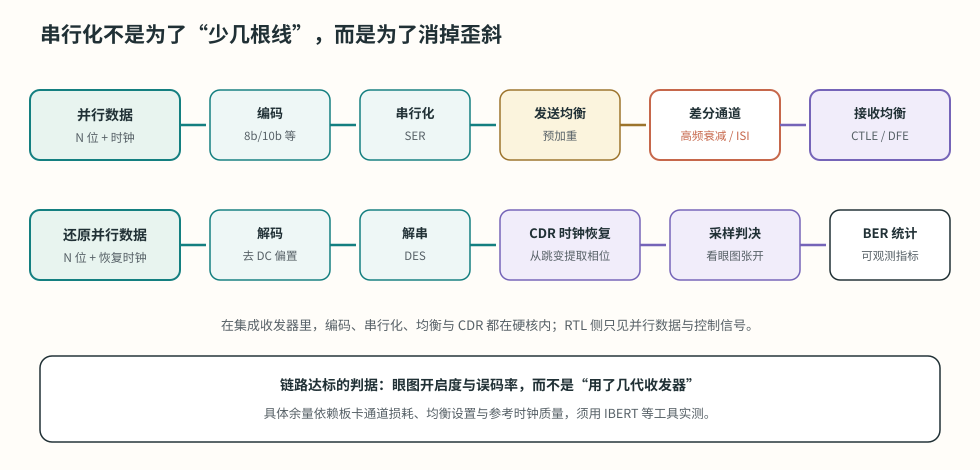

高速串行接口：SerDes 链路、编码与 PCIe 分层
当并行总线被走线歪斜卡住时，SerDes 用一对差分线换回了带宽。理解编码、均衡与链路的各自职责，比记住某个协议的速率表更重要。
01 / 从并行到串行：歪斜与带宽
早期的系统互连以并行总线为主：数据位宽 32/64，时钟几十到上百 MHz。但并行总线有一个绕不过去的物理障碍——歪斜（skew）。多根走线的长度、层间介电常数、过孔与温度都不可能完全一致，同一拍发出的多个位会在不同时刻到达接收端。位宽越大、速率越高，留给采样窗口的余量越小。
SerDes（Serializer / Deserializer，串行器/解串器）的解法是把并行数据串化成一条（或一对差分）高速串行流，并在接收端从数据本身恢复时钟（CDR）。这样“多根线之间的歪斜”消失了，只剩下单一通道内的码间干扰——后者可以用均衡来处理。代价是模拟前端变得复杂：高速串行收发器依赖片上 PLL、CDR、发送均衡与接收均衡，这也是厂商的核心技术门槛。

差分信令是高速串行的默认选择：接收端取 P/N 之差可以抑制共模噪声，两根线反向电流的近场辐射也相互抵消。超过一定的速率之后，单端 CMOS I/O 基本不再适用。
02 / SerDes 链路由什么组成
把一条链路拆开，每一部分解决不同的问题：
| 环节 | 解决什么 |
|---|---|
| 发送编码（8b/10b、64b/66b、128b/130b） | 保持直流平衡、提供跳变密度，便于时钟恢复；提供控制字符 |
| 串行化 / 解串（SERDES） | 把 N 位并行变成 1 位高速串行，消除并行歪斜 |
| 发送均衡（预加重 / 去加重） | 预先补偿通道的高频衰减 |
| 接收均衡（CTLE / DFE） | 频率补偿与消除码间干扰（ISI） |
| CDR（时钟数据恢复） | 从数据跳变中提取采样时钟，不依赖单独时钟线 |
这里需要分清“谁在做”：在集成收发器的 FPGA 上，编码、串行化、均衡与 CDR 大多由硬核收发器完成，你在 RTL 侧看到的是并行数据 + 时钟 + 控制信号。自己实现编码器的场景通常是用普通 I/O 做较低速率的“软”串行（例如用 SelectIO 做源同步接口），或使用不带硬核的低成本器件。
03 / 8b/10b：解决直流平衡与跳变密度
一条只传 NRZ 数据的串行流有两个麻烦：如果连续发送很长的 0 或 1，接收端就很久没有跳变，CDR 无从提取时钟；如果数据偏向某一极性，又会在交流耦合电容上产生直流偏置。8b/10b 编码用 10 位表示 8 位，恰好针对这两点：
- 直流平衡。 每个码字的 0/1 数量差不超过 1，并用一个“不平衡度（Running Disparity）”状态来选择码字，长期统计下 0 和 1 数量相等。
- 跳变密度。 编码保证不会出现过长的无跳变序列，给 CDR 提供足够的相位信息。
- 控制字符。 保留一些不对应数据的码字（如 K 码），用作帧定界与对齐。
8b/10b 由 IBM 的 Widmer 与 Franaszek 于 1983 年提出，后来被 PCIe Gen1/Gen2、SATA、USB 3.0、千兆以太网等大量采用。它的结构是固定的：低 5 位走 5b/6b 表，高 3 位走 3b/4b 表，再根据当前不平衡度选择正/负码字。完整的表很长，也很容易抄错；在集成收发器里它已经是硬核，你在向导里勾选即可，不需要在 RTL 里重新实现。
04 / 收发器家族与选型边界
AMD 在不同器件系列里提供不同档次的收发器，名字大致按能力递增：7 系列的 GTP / GTX / GTH，UltraScale/UltraScale+ 的 GTH / GTY。Intel 对应的是 GX/TX 系列，Lattice 等厂商也有各自的中低速收发器。名字本身不代表速率——具体每通道最高线速率、支持哪些编码与均衡、可用通道数，必须查该器件的收发器用户指南（参见 UG476 等）。
| 要确认的项 | 到哪里查 |
|---|---|
| 每通道最高线速率 | 器件数据手册 / 收发器用户指南 |
| 支持的编码与均衡档位 | 收发器用户指南（TX/RX 均衡、CDR 范围） |
| 通道数量与参考时钟输入 | 器件封装与 Bank 规划、板卡原理图 |
| 所需协议 IP 是否可用 | 厂商 IP 目录与对应 Product Guide |
一个常见的定价直觉是：收发器数量与速率是决定器件成本的主要因素之一。如果你的协议只需中低速链路，没有必要为用不到的更高速收发器付费。但具体价格与型号属于采购信息，本章不给出数字。
05 / PCIe：分层与链路速率
PCI Express（PCIe）是 FPGA 连接主机 CPU 最常见的链路。拓扑上有两个角色：根复合体（Root Complex）通常在主处理器侧，端点（Endpoint）是 FPGA。协议分三层，每层职责不同：
- 事务层（Transaction Layer）：把 Memory Read/Write、Completion、Configuration 等请求封装成事务层包（TLP），并解析回响应。
- 数据链路层（Data Link Layer）：为 TLP 加上序列号与 CRC，提供 Ack/Nak 重传，保证可靠交付。
- 物理层（PHY）：使用收发器完成串行化、编码、链路训练状态机（LTSSM）与均衡。
每代 PCIe 的链路速率与编码是 PCI-SIG 规定的（见文末来源）：
| 世代 | 每通道速率 | 编码 |
|---|---|---|
| Gen1 | 2.5 GT/s | 8b/10b |
| Gen2 | 5.0 GT/s | 8b/10b |
| Gen3 | 8.0 GT/s | 128b/130b |
| Gen4 | 16.0 GT/s | 128b/130b |
| Gen5 | 32.0 GT/s | 128b/130b |
在 FPGA 上实现 PCIe 通常不需要自己写 TLP 解析器：厂商提供集成 IP（如 AMD 的 DMA/Bridge Subsystem for PCI Express，PG195），把 PCIe 事务层抽象成 AXI 接口并提供 DMA 引擎，让主机通过 DMA 直接读写 FPGA 内存。这样你只需面对 AXI（参见第 19 章）。
链路实际跑在哪一代，由链路训练决定：双方在 LTSSM 中协商速率与宽度，任何一环（参考时钟精度、通道损耗、均衡）不满足，就可能降级到较低世代。因此“卡标称 Gen3”不等于“运行时一定 Gen3”，必须用工具（如 IBERT 眼图、系统侧链路状态）实测确认。
06 / 其它高速协议与 MIPI D-PHY
除了 PCIe，FPGA 常用的高速串行协议还有：SATA（存储，8b/10b）、USB 3.0（外设，8b/10b）、10GbE 及以上以太网（64b/66b 及更高）、JESD204B/C（连接高速 ADC/DAC，8b/10b/64b/66b）、Interlaken（芯片间）等。它们的共同点是都依赖收发器硬核；差别主要在编码、链路训练与上层协议栈。
MIPI D-PHY是个特例，值得单独理解：它用于摄像头（CSI-2）与显示屏（DSI），采用DDR 双沿采样与LP（低功耗）/ HS（高速）双模。HS 模式下差分摆幅很小，电气特性与标准 LVDS 不同，直接接到普通 I/O 常常不满足时序/电平要求。常见的两种做法：
- 电阻网络方案：用高性能（HP）Bank 配合外部电阻网络做电平转换，速率上有限，但成本低。
- 专用 D-PHY IP：使用厂商提供的 MIPI D-PHY IP，支持完整的 CSI-2 / DSI 协议栈，占专用 I/O 或收发器资源。
工业视觉中“MIPI 摄像头 → FPGA 实时处理 → PCIe/以太网上传”是很常见的链路，具体能否达标同样取决于板卡与实现，而不是协议本身。
07 / 边界与可验证条件
- 速率是器件与板卡的属性，不是协议的属性。 同一代 PCIe 在两块板卡上可能跑在不同世代；能否达标取决于参考时钟精度、通道插损、均衡设置与 PCB 设计。
- 不要在 RTL 里重造已经硬化的东西。 集成收发器已包含编码与均衡；把精力放在链路配置、约束与调试验证上。
- “眼图张开”是可测的状态。 需要盯住的是可观测指标：IBERT 眼图、误码率、链路当前速率/宽度（参见 UG908），而不是“应该没问题”。
- 本章不给出任何眼图余量、插损、误码率或晶振 ppm 的“典型值”。 这些必须来自具体板卡与仪器实测。
思考练习：“同一代 PCIe 在两块板卡上跑在不同速率”为什么不矛盾？
因为速率是器件与板卡的属性，不是协议的属性。协议规定的是链路能协商的速率/宽度集合；最终协商到哪一档，取决于参考时钟精度、通道插损、发送/接收均衡设置与 PCB 布局布线。所以两块板卡同属一个 PCIe 世代，却可能因参考时钟或信号完整性不足而回退到较低速率。
08 / 延伸阅读与资料来源
- AMD UG476：7 Series FPGAs GTX/GTH Transceivers User Guide（编码/均衡/CDR）
- AMD UG578：UltraScale Architecture GTH Transceivers User Guide
- AMD UG908：Vivado Programming and Debugging（含 IBERT 链路误码/眼图）
- AMD PG195：DMA/Bridge Subsystem for PCI Express（XDMA）
- PCI-SIG：PCI Express 规范（各代速率与编码）
- MIPI Alliance：D-PHY 规范（HS/LP 与 DDR 采样）